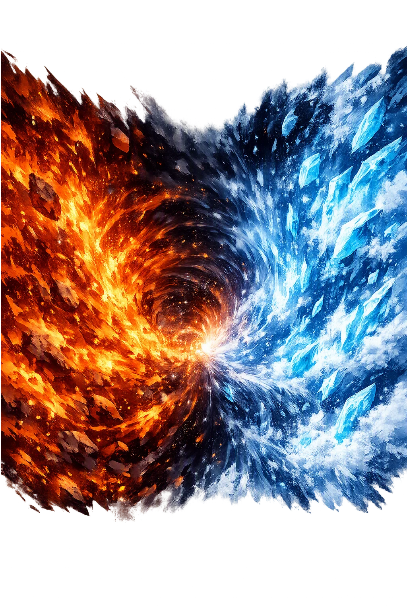
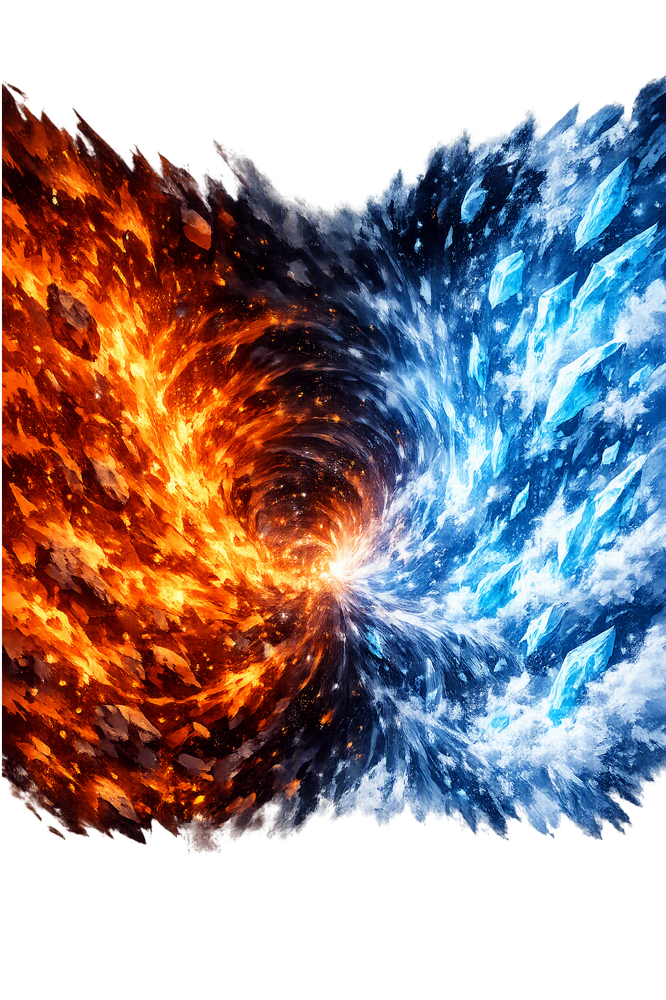

The Authentic Orthography
Primordial Void · Magic-gaping-void

Unicode restoration and ASCII comparison
ᚴᛁᚾᚾᚢᚾᚴᛅᚴᛅᛒ
The name in its original Norse form. Ginnungagap (ᚴᛁᚾᚾᚢᚾᚴᛅᚴᛅᛒ) is attested in the source tradition — “Magic-gaping-void”. Its original diacritics and script distinctions carry the full phonetic and orthographic weight of the source tradition.
ginnungagap
The plain ginnungagap form is identical to the Unicode restoration. Because this name is already written in Latin letters, no diacritics, stress, or script information were lost — only capitalization differs.
Ginnungagap
The Unicode restoration does not need to recover lost marks for Ginnungagap. Its value is canonical spelling and consistent cataloguing, not the reconstruction of erased orthography. The domain is readable as-is to both DNS and humanity.
Ginnungagap.com → ginnungagap.com
The non-ASCII characters in Ginnungagap are encoded while the ASCII remains visible. To the DNS, it is Punycode. To humanity, it is Ginnungagap.
How Ginnungagap travels from ancient script to the modern URL
Owned, ideal, and ASCII forms of Ginnungagap
Ginnungagap
Restores ᚴᛁᚾᚾᚢᚾᚴᛅᚴᛅᛒ. The full Unicode restoration. ginnungagap.com is not in the PuniCodex collection — it is watched for release; if it drops, this temple upgrades to an owned flagship.
How Ginnungagap was spoken
The Yawning Gap Where Rime Met Flame Before the World Began
Ginnungagap is the emptiness that was there first: the vast, mild, windless chasm between Niflheimr's rime and fog in the north and Muspellsheimr's fire and sparks in the south, in whose middle the two extremes met, melted, and quickened into Ymir — the condensation from which the whole made world, and the Æsir themselves, descend.
The world of fog and rime in the north, made long before the earth — its spring Hvergelmir feeds the rivers called the Élivágar.
The burning world in the south, bright and impassable to any not native to it, where Surtr stands at the frontier with a flaming sword.
Where the sparks and embers flying from the south touched the rime drifting from the north, the gap thawed, dripped — and the drops took on life.
The first shape the void made: the frost-ogre who quickened in the meltwater, called Aurgelmir by the rime-giants who descend from him.
Stories of Ginnungagap
Ginnungagap has no adventures, because it is not a character but a place — or rather the condition of there being places at all. Its mythology is the first chapter of everything: the Norse creation, told in Völuspá's three terse lines and unpacked by Snorri into the finest cosmogony the Germanic world preserved.
The seeress reaches back before memory: 'Early in time, when Ymir made his settlement — there was no sand nor sea nor cool waves; earth was found nowhere, nor the sky above; a gap of ginnungs there was, but grass nowhere.' That is the entire notice the oldest poem gives, and everything Snorri builds hangs on its two words, gap ginnunga. No god speaks, nothing acts; the poem simply registers an emptiness where the world will later be, with the first giant already housed at its edge.
Asked what was before the earth, Hár tells Gylfi that Niflheimr was made many ages before the world: a dark world of mist with the spring Hvergelmir at its heart, from which run the rivers called the Élivágar — Svǫl, Gunnþrá, Fjǫrm, Fimbulþul, Slíðr and Hríð, Sylgr and Ylgr, Víð, Leiptr, and Gjǫll, which flows nearest the gate of Hel. Far from that spring the rivers hardened like the slag that runs from a forge, turned to ice, and spread rime and freezing fog northward. But the southern part of Ginnungagap faced Muspellsheimr, the bright, burning world no foreigner can enter, where Surtr stands guard at the border with a flaming sword — and the sparks and glowing embers that flew out of Muspellsheimr lightened the gap from below.
Between the two, Snorri says, Ginnungagap was as mild as a windless sky. Where the warm air from the south met the rime from the north, the ice thawed and dripped — and by the power of the one who sent the heat, the running drops quickened and took the likeness of a man. He is named Ymir, though the rime-giants call him Aurgelmir, and from him their whole race descends; asked whether Ymir was a god, Hár answers flatly that he and all his kin were evil. From the same rime-drops came the cow Auðhumla, whose four rivers of milk fed the giant, and who licked the salty rime-stones until, over three days, a man emerged whole from the ice: Búri, the grandfather of the gods.
Búri's son Borr married Bestla, daughter of the giant Bǫlþorn, and their sons were Óðinn, Vili, and Vé — and the first act of the new gods in the old void was a killing. They slew Ymir, and so much blood ran from his wounds that the whole race of rime-giants drowned, save one: Bergelmir, who climbed with his wife onto his lúðr — a word that may mean a boat or a chest — and from whom the giants of the frost descend anew. The brothers dragged Ymir's body into the middle of Ginnungagap and made the world of it: the earth from his flesh, the sea and lakes from his blood, the mountains from his bones and teeth, the sky from his skull, held up at the four corners by the dwarfs Norðri, Suðri, Austri, and Vestri, and the clouds from his brains. The sparks that flew out of Muspellsheimr they set in the sky as stars. Thus the gap was not filled so much as furnished: everything that exists is a giant's body arranged inside the old emptiness.
The Poetic Edda confirms Snorri's outline from its own witnesses. Vafþrúðnir the giant, questioned by Óðinn about the first origin of giantkind, answers that out of the Élivágar sprang poison-drops that grew until a giant came from them. And Grímnismál gives the fashioning in verse: 'From Ymir's flesh the earth was shaped, and the mountains from his bones; the sky from the skull of the frost-cold giant, and from his blood the sea' — and adds that the gracious powers made Miðgarðr for men's sons from his eyebrows, and the hard-mooded clouds from his brains. The poems do not name the gap as often as Snorri does, but they supply its inventory: ice-rivers, venom, melt, and a world assembled from a corpse.
Every cosmogony must answer the same rude question: what was there before anything was? The North's answer is the strangest and, in its way, the most honest — room. Not a god, not a word, not even darkness with a personality: a gap, mild as a windless sky, with ice weather at one end and fire weather at the other. Creation, in this telling, is not commanded; it condenses. Two climates that could never touch are given somewhere to meet, and the world is what drips out of the meeting. Ginnungagap asks a quieter question than most voids: not what made you, but what made room for you — and it suggests that every beginning, cosmological or personal, starts the same way: with an emptiness patient enough to hold the opposites apart until they are ready to collide.
Enter Extended Lore